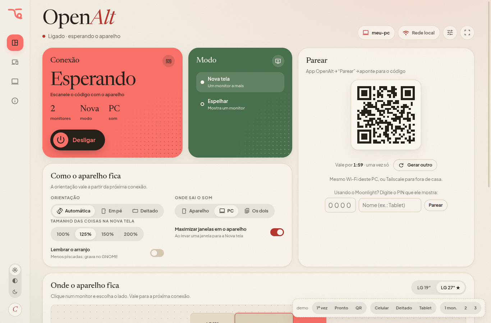

/ WHAT IT ISA free, open source app that turns your phone or tablet into a second monitor, a mirror or a game screen for your PC. One QR code and you’re streaming.
downloadGet OpenAlt for Linux

9:41wifibattery_full
OpenAlt
Your phone or tablet as a PC screen
computer
my-pc● Paired · tap to connect
Pair a new PCqr_code_scannerScan QR
↘ v0.1 · GPL-3.0Linux now · Windows next · Android app